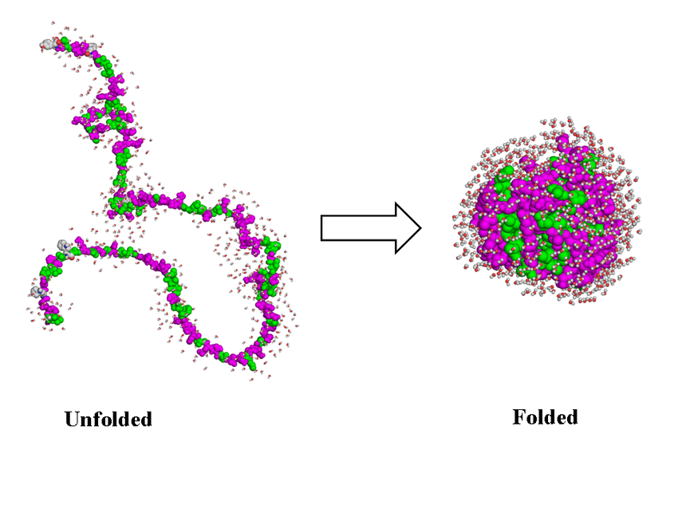

Applications
Contents
Applications¶
import numpy as np
import scipy
import matplotlib.pyplot as plt
Interplay of Energy and Entropy¶
Grouping microstates into states¶
The word state is overloaded and is easilyt one of the more slippery defined concepts in physics/chemistry and biology. SO let us try to be more precise:
A microstate \(i\): a single frozen snapshot of atomic configurations (in CM). For instance instanenotus positions and momenta of all atoms in Ar gas.
A state, \(A\): a collection (fairly large) of microstates. For instance open vs colsed states of a polymer.
Relative populations of states¶
Probabilities is what we observe experimentally. In a sense we can say that probability is the most objective thing we can know about a system. So let us reason in terms of probabilities as much as possible while treating entropies and free energies as utility quantieis for computing the probabilities
Protein folding problem with 1D potential¶
As crazy as it sounds we can learn something about protein folding by using a simple 1D potential:

def U_fold1D(ratio=1/25, deltaU=50, T=0.1):
'''1D energy function, where
rationL: fraction of folded vs unfolded states (must be less than 1)
deltaU: energy difference between unfolded and folded states (must be positive) in units of kb = 1
T: temperature (must be possitive)
OUTPUT: x coordinate, U(x) potential, pf, pu" fractions of folded and funfolded states respectively.
'''
assert np.any(T) > 0
assert ratio < 1
assert deltaU > 0
x = np.linspace(0,1,1000)
U = np.linspace(0,1,1000)
U[x < ratio] = 0
U[x > ratio] = deltaU
pf = ratio/(ratio+np.exp(-deltaU/T))
pu = 1 - pf
U[0] = U[-1] = 100 # set end states to be high
return x, U, pf, pu
x, u, pf, pu = U_fold1D()
fig, ax = plt.subplots(nrows=2)
ax[0].plot(x,u, lw =3)
ax[0].set_xlabel('$x$')
ax[0].set_ylabel('$U(x)$')
ax[1].plot(x,np.exp(-u), lw=3, color='orange')
ax[1].set_xlabel('$x$')
ax[1].set_ylabel('$p(x)$')
Text(0, 0.5, '$p(x)$')
T = np.linspace(0.1,100,1000)
x, u, pf, pu = U_fold1D(T=T)
plt.plot(T,pf,lw=3, color='green')
plt.plot(T,pu,'--',lw=3, color='red')
plt.xlabel('Temperature, T',fontsize=15)
plt.ylabel('Fraction of (un)folded',fontsize=15)
plt.legend(['folded','unfolded'],fontsize=15)
<matplotlib.legend.Legend at 0x7fca477e7b90>